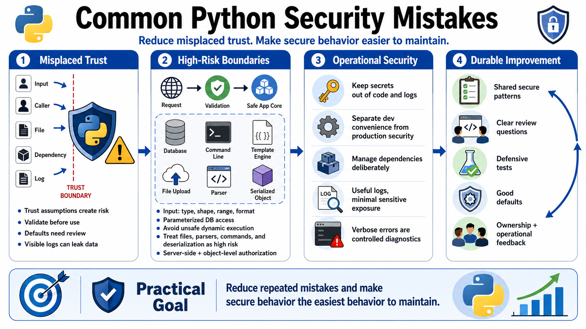

Course Summary and Key Takeaways
Connecting to LMS... Progress: in progress

Narration
Common Python security mistakes usually come from misplaced trust. Code accepts a value too early, relies on a default too long, assumes a caller has permission, treats a file as harmless, trusts a dependency without review, or logs data that should not be widely visible. These mistakes are rarely about Python being unsuitable for secure systems. They are about engineering decisions that need to be explicit, tested, and maintained.
Strong Python security depends on safe APIs and clear boundaries. Validate input for type, shape, range, format, and business intent. Use parameterized database access. Avoid unsafe dynamic execution. Treat command execution, templates, parsers, uploaded files, and deserialization as high-risk boundaries. Enforce authorization server-side and at the object level. Protect tenant boundaries and sensitive operations consistently across normal, bulk, administrative, and background paths.
Secrets, configuration, dependencies, logs, and errors are part of the product, not side concerns. Keep secrets out of code, images, and logs. Review production configuration separately from development convenience. Manage dependencies deliberately and keep updates testable. Use logs to support detection and investigation while minimizing sensitive exposure. Treat debug output and verbose errors as controlled diagnostics, not public behavior.
Tools and frameworks help, but they do not replace ownership. The durable improvement comes from shared patterns, clear review questions, defensive tests, good defaults, careful dependency management, and operational feedback. The goal is not perfect code. The goal is to reduce repeated mistakes and make secure behavior the easiest behavior to maintain over time.